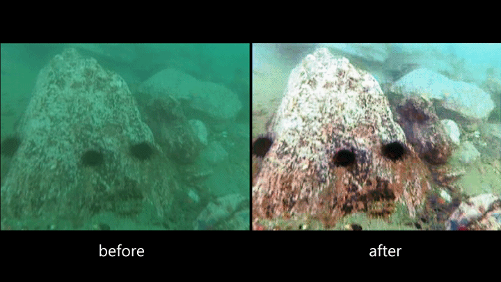

Underwater Image Recovery
Please note that this work is still under peer-review, submitted to “The Visual Computer” in May, 2021.
The manuscript and codes are available.
Abstract
Existing approaches treat the restoration process as a whole; thus, they cannot adequately handle the color distortion and low contrast in the enhanced images. In this paper, we propose a global-local-guided model for realizing UIE tasks in a coarse-to-fine manner to alleviate these issues. The proposed model is divided into two paths. The global path targets to estimate basic structure and color information, while the local path targets to remove the undesirable artifacts, e.g., noises over-exposure regions, and blurred edges. By integrating two neural networks into our model, we could recover the underwater images with clear textural details and vivid color. Besides, a learning-based weight map is introduced to make the global-local path on friendly terms, which can balance the pixel intensity distribution from both sides and remove redundant information to a certain degree. Qualitative and quantitative experimental results on various benchmarks demonstrate that our method can effectively tackle color distortion and blurred edges compared with several state-of-the-art methods by a large margin. Finally, we also conduct experiments to demonstrate that our method can be applied in various computer vision tasks, e.g., object detection, matching, and edge detection.
This is the official implementation for “Global Structure-guided Learning Framework for Underwater Image Enhancement”.

Overall Architecture

Representative Results

Reach me
E-mail: junko.lin@yahoo.com